Edit the model and update the drawing
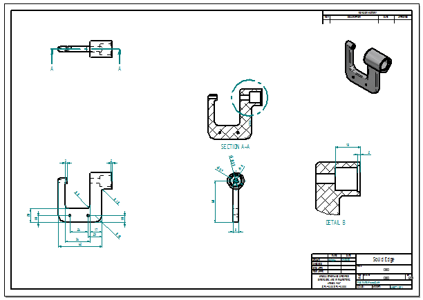
In the next few steps. open the part model to make a design change. Then return to the drawing and update the drawing views.
When working in a drawing derived from a 3D part or assembly, open the part or assembly document directly from the drawing by double-clicking any drawing view.
Ensure the Select command is active .
Position the cursor over the isometric drawing view shown in the illustration, and then double-click to open the part model.
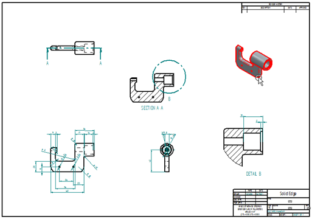
The part model document opens for editing.
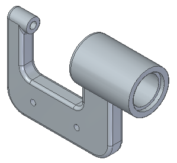
In PathFinder, position the cursor over the Protrusion 1 entry, and then click.
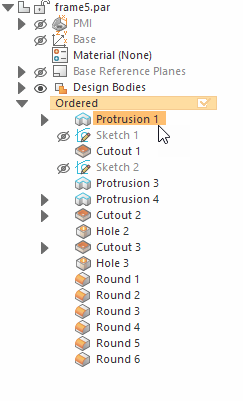
Click the Dynamic Edit button.
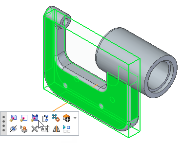
The dimensions for the protrusion are displayed.
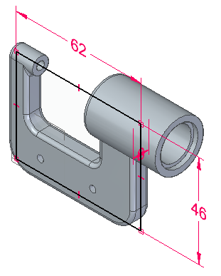
Click the dimension shown.
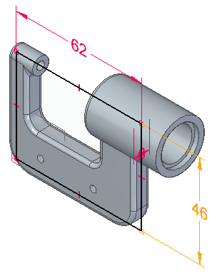
In the Dimension Value box, type 58 and click.
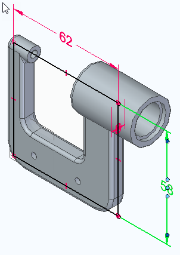
Click to update the dimension.
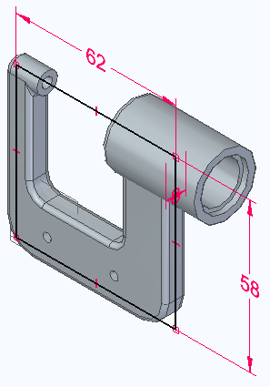
On the Quick Access toolbar, choose Save  to save the edited part.
to save the edited part.
Close the part document by clicking the X next to the file name on the part document tab.
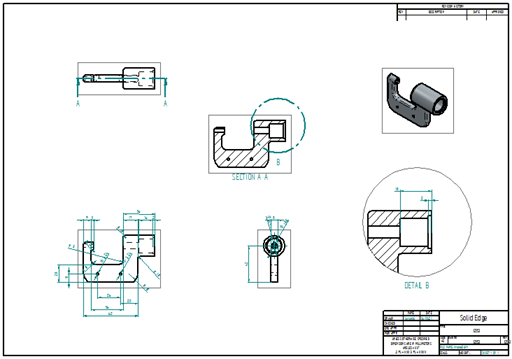
When returning to the drawing, the system prompts that drawing views are out of date. Click OK to dismiss this message.
Notice that a gray outline displays around each drawing view. The gray outline around each drawing view means the views are out of date with respect to the part model.
A change to the model caused the drawing views to go out of date.
In the next few steps, learn about the tools available for tracking drawing view and dimension changes in a drawing.
Choose Tools tab→Assistants group→Drawing View Tracker .
The Drawing View Tracker dialog box displays, listing all of the drawing views on the drawing.
The icon to the left of each drawing view entry indicates that a view is out of date.
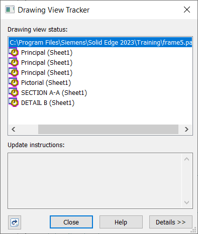
Use the cursor to select an entry in the list, and the view highlights on the drawing sheet.
At the bottom of the Drawing View Tracker dialog box, click the Update Views button to update all of the views at once.
Notice that the out-of-date icon in front of each drawing view name has been replaced by a new symbol , which indicates that the drawing views are up to date.
On the Drawing View Tracker dialog box, click Close.
The Dimension Tracker dialog box is automatically displayed. Learn more about this in the next few steps.
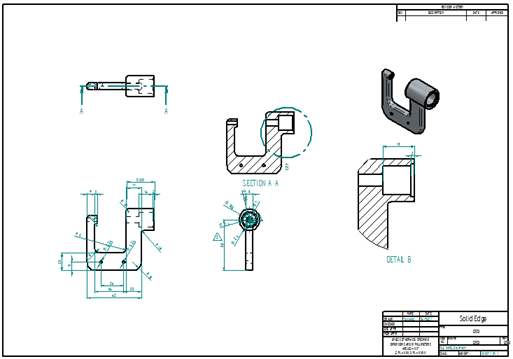
Notice that the gray boxes around the drawing views no longer display, as shown above. This indicates the drawing views are up-to-date.
Observe the Dimension Tracker dialog box. Notice that there is an entry for the drawing dimension that corresponds to the model dimension edited.
If required, move Dimension Tracker to see all the drawing views.
Click the dimension entry in Dimension Tracker and notice that the changed dimension highlights, and that a revision triangle displays adjacent to the dimension.
Also notice that a revision triangle for the center mark annotation is listed.
Click Clear All to clear all of the revision triangles from the drawing.
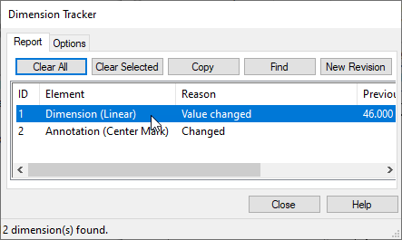
On the Dimension Tracker dialog box, click Close.
Dimension Tracker ensures awareness of even the smallest design change during drawing updates. Choose to discard the revision marks after reviewing the drawing or save them as revision notes. The shape of the revision balloon can be changed using the Options tab.
On the Quick Access toolbar, click the Save  button to save the completed drawing.
button to save the completed drawing.
Close the file.